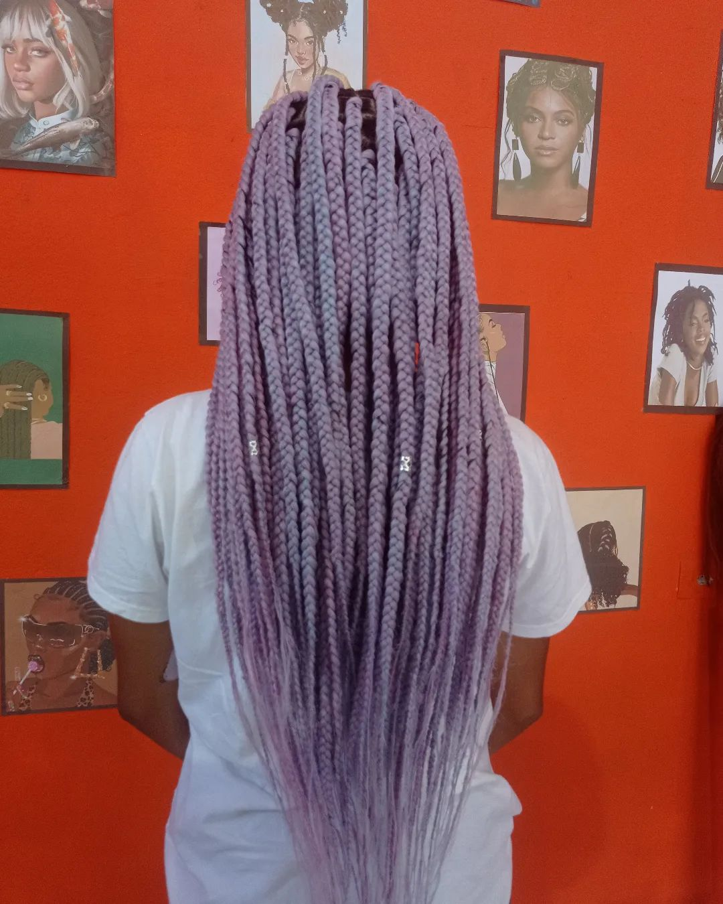
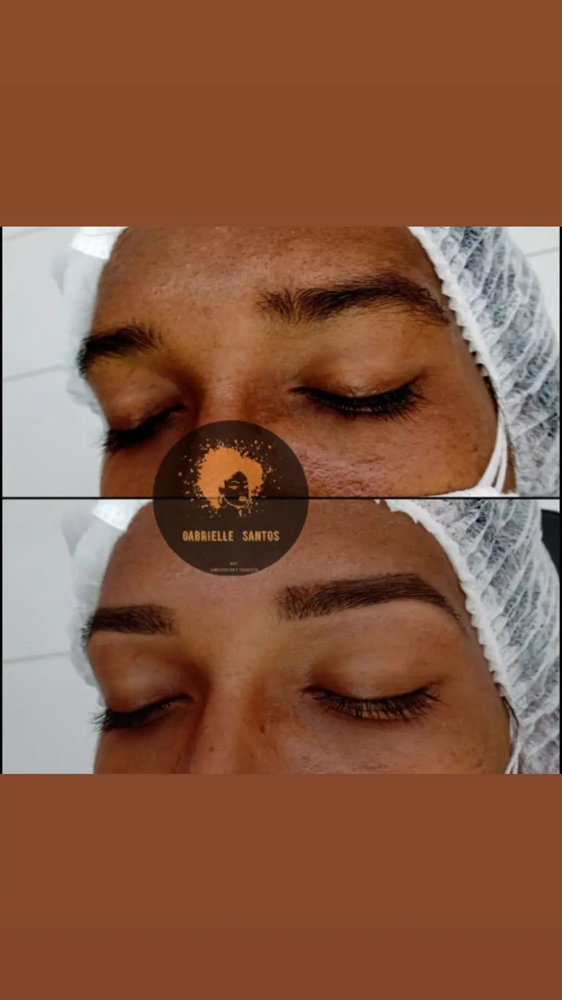

-- Nossos Serviços --

Trança #1

Trança #2

Trança #3

Trança #4

Trança #5

Trança #6

Sobrancelha #1

Sobrancelha #2

Sobrancelha #3

Sobrancelha #4

Sobrancelha #5

Sobrancelha #6
| Tipo de Trança | Descrição |
|---|---|
| Box Braids | Tranças finas feitas com extensões de cabelo sintético, estilizadas de várias maneiras. |
| Twist Braids | Tranças torcidas, semelhantes às Box Braids, duradouras e estilosas. |
| Kanekalon Braids | Tranças feitas com a fibra sintética Kanekalon, macia e resistente ao calor. |
| Crochet Braids | Tranças aplicadas em uma base de trança de crochê, processo mais rápido. |
| Fulani Braids | Tranças inspiradas nas tribos Fulani com tranças finas, franjas e contas decorativas. |
| Senegalese Twists | Tranças torcidas com uma aparência elegante e polida. |
| Ghana Braids | Tranças com padrões intrincados, feitas com mechas de cabelo sintético. |
| Jumbo Braids | Tranças largas e grossas, opção mais rápida de instalação. |
| Marley Twists | Tranças inspiradas no estilo de Bob Marley, para um visual mais natural e descontraído. |
| Micro Braids | Tranças extremamente finas e delicadas, geralmente feitas com extensões de cabelo sintético. |
-- Siga-nos --
Veja nosso conteúdo mais recente nas Redes Sociais
@gabrielle_santos_afro_hair
Abrir Instagram